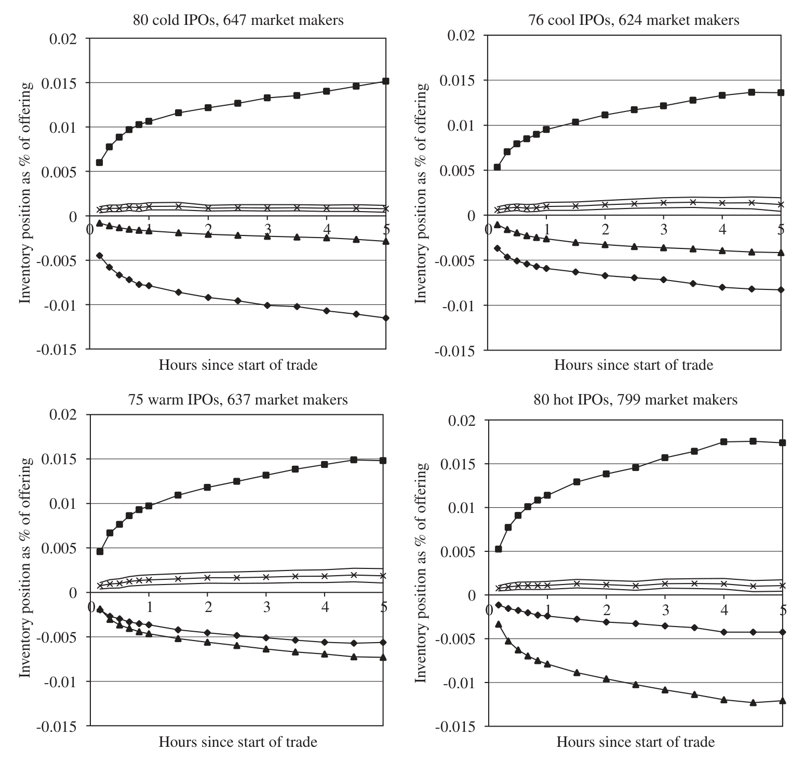
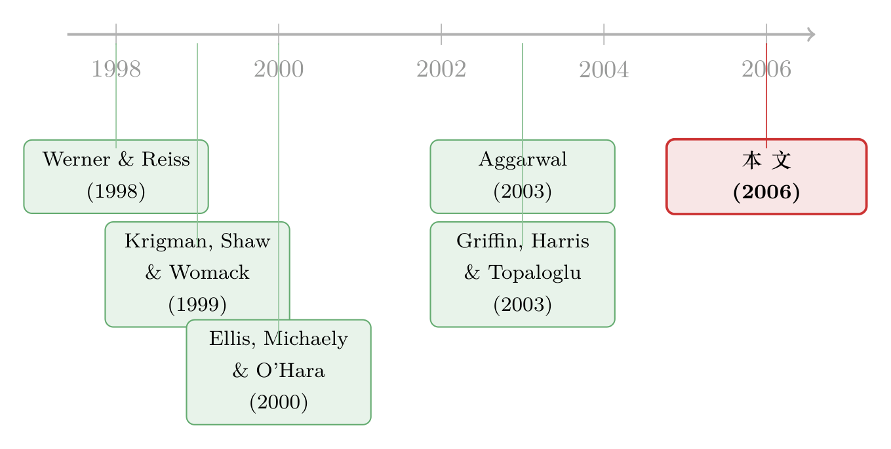

新股第一天的滔天成交，到底是谁在交易？
本文读的是 Ellis (2006, Journal of Financial Economics)：新股上市头两天的成交量高得惊人（相当于发行股数的 70% 以上），但「打新就跑」(flipping) 只占 15%。这巨大的缺口，一半来自投资者真实地在调整持仓，另一半来自纳斯达克这个「多做市商市场」自身的库存管理——做市商把多出来的货一笔笔甩给主承销商，让自己全天的库存停在零附近。
1 引言：一笔对不上的账
先说一个所有研究 IPO 的人都知道、却长期没人讲清楚的怪事。
新股上市的头一两天，成交量大得离谱。Ellis、Aggarwal 等人早就反复记录过：这两天换手的股票，相当于发行总量的 70% 还多。直觉上，谁在制造这么大的量？财经媒体和不少学者的标准答案是——「打新党」(flippers)：那些在配售里拿到了新股的人，开盘就把筹码倒出来，赚一笔无风险的差价。这个故事讲了二十年，听上去天衣无缝。
但真正关键的一步，是有人去把这笔账核了一遍。Aggarwal (2003) 拿到了存管信托公司 (Depository Trust Company, DTC) 的精确数据，一笔笔数清楚到底有多少股是「配售来、又卖掉」的。结果让人大跌眼镜：flipping 平均只占发行股数的 15%，远远撑不起 70% 的成交量。
于是一个再自然不过的问题浮了出来：
如果不是打新党在制造成交，那剩下那一大半，到底是谁在交易？为什么交易？
这正是 Ellis (2006) 要回答的问题。她手里握着一份别人没有的牌——美国证券交易商协会 (NASD) 提供的、带有交易双方身份的逐笔成交数据。靠着它，她第一次把「新股开盘那几天，谁和谁在成交」这张图，完整地画了出来。
（关于 Aggarwal 那篇把「打新党」拉下神坛的论文，可参见《新股开盘那天的「滔天」成交，到底是谁在卖？》。）
2 数据：一份能看清「对手方」的成交簿
先交代清楚这副好牌到底好在哪。
Ellis 从 SDC Global Issues 数据库里取出 1996 年 10 月到 1997 年 6 月间的 559 只 IPO，用 EDGAR 上的招股书逐一核对、补全，再剔除房地产投资信托 (REITs)、封闭式基金、ADR、单位发行 (unit offerings) 以及发行额低于 500 万美元的小盘，最后留下 311 只纳斯达克 IPO。之所以只要纳斯达克，是因为只有它能和那份逐笔成交数据对上。
观测单位是每一笔成交。这份数据的关键在于：报价数据里，每一条报价更新都用名字标出了是哪个做市商；成交数据里，买卖双方都有名字。这就让 Ellis 能把市场上的参与者分成四类：
- 主承销商 (lead underwriter)——分掉绝大多数配售份额的那一家；
- 其他做市商 (other market makers)——非主承销商的注册做市商；
- 经纪商 (brokers)——能看到所有做市商报价、能把单子导给做市商，但自己不能挂价的 NASD 会员；
- 客户 (customers)——非 NASD 会员的投资者。
她做了两个关键假设：做市商交易时是「自营」(principal)，任何买卖都进出自己的库存；经纪商则永远是「代理」(agent)，替客户跑腿。NASD 自己估计，那个年代 95% 的做市商成交确实是自营。至于成交方向（买还是卖），客户—做市商之间的好认，其余的（做市商之间、做市商—经纪商）则用经典的 Lee and Ready (1991) 算法来推断。
样本长什么样？头两天平均有 878 笔成交、238 万股、3675 万美元易手；按发行额算，换手率均值 75.7%、中位数 66.9%——确实是「滔天」级别。Ellis 进一步按首日收益率把样本切成四档：cold（首日收益 ≤ 0）、cool、warm、hot（≥ 17.5%），并发现越「热」的新股，成交越活跃，差异在 1% 水平上显著。这个冷热分档，是后面所有反转的线索。
3 第一刀：把成交量拆给「谁和谁」
接着，进入全文最核心的一张图——谁在和谁成交。
Ellis 把所有成交摆进一个 4 象限的矩阵：行是「发起方」，列是「流动性提供方」，每一格都是某一对参与者占总成交量的比例。结论分三层剥开：
第一层，绝大多数成交是投资者驱动的。 投资者发起、由做市商接盘的「投资者—做市商」成交，占了总成交量的 72.82%。这一象限里，最大的一对是「客户直接和主承销商成交」(34.68%)，其次是「客户和其他做市商成交」(18.73%)。这并不意外：主承销商手里攥着绝大多数配售份额，自然是投资者最天然的对手方。
这一步就已经回答了引言里的问题。Ellis 发现，约 77% 的成交是投资者动机的——但「投资者动机」远不止「打新就跑」。新股往往被超额认购很多倍，配售是配给制的：有人只拿到想要份额的一小部分，开盘后想买进补足；有人压根没拿到配售，想在二级市场抢货；还有日内交易者 (day traders) 和卖空者 (short sellers)。这些都是真实的投资者成交，却都不是 flipping。
第二层，剩下那块缺口，是纳斯达克的微观结构本身。 纳斯达克是个多做市商市场，做市商之间、以及在 Instinet 上为了管理库存而发生的成交，平均占了 23% 的成交量。其中纯粹的「做市商之间」(interdealer) 成交占 17.74%，比客户发起的成交还要大，仅次于它。作为对照，Griffin et al. (2003) 测得纳斯达克 100 成分股在平常日子里 interdealer 只占 11.93%——IPO 头两天的交易商间成交，显著地更高。
4 第二刀：把成交量拆成「买」和「卖」
然后，一个更妙的角度出现了：把成交分成买方发起和卖方发起。
整体看，卖出占了成交量的 60.71%，买入只有 39.29%——卖压大于买盘，这和 KSW 当年发现的「正订单失衡」一致。
但买和卖的「路径」完全不同，这是全文最耐人寻味的地方：
-
买的时候，投资者径直找主承销商。 投资者发起的买入占
33.61%，其中22.22%是直接从主承销商手里买，只有4.41%来自其他做市商。为什么？因为主承销商是初始配售的发放者，是想加仓者的天然对手；更微妙的是「搭售协议」(tie-in agreements)——拿到配售的投资者承诺会在二级市场追加买入，他们特意走主承销商，是为了「让对方看见自己履约了」。 -
卖的时候，投资者却绕开主承销商。 投资者发起的卖出高达
43.42%，远高于15%的 flipping，说明大量卖单根本不是来自配售份额——它们来自日内交易和卖空。而且，虽然客户主要从主承销商手里买，卖却更愿意走其他做市商 (14.32%vs12.46%)。原因很现实：主承销商会用「罚单」(penalty bids) 惩罚打新党，想卖的人为了躲罚单，自然避开主承销商。
于是一个清晰的不对称出现了：买盘几乎没有 interdealer 成交 (2.72%)，卖盘却有 15.02% 是交易商之间的——而且是单向的，几乎全是其他做市商把货卖给主承销商。
5 真正的反转：做市商的库存，全天停在零
到这里，所有线索收束到一个机制上。
把样本按冷热分开看，Table 2 里那种「卖压压倒一切」的景象，其实只在 cold IPO 里成立。最冷的那批，卖方发起的成交占 76.11%；而到了 warm 和 hot，这个比例分别降到 52.35% 和 52.20%——热门股的买卖是平衡的，一派人人都想交易的繁荣景象；冷门股则是卖压远超买盘。
问题来了：cold IPO 里，那么大的单边卖压，最后被谁吃掉了？
答案就是那条贯穿始终的 interdealer 暗线。其他做市商作为流动性提供者，被动接下了大量客户的卖单，库存被顶高；他们随即把这些多出来的货,一笔笔卖给主承销商，让自己回到接近零的库存。而主承销商则用绿鞋期权 (green shoe / overallotment option) 来消化——正如 Ellis et al. (2000) 所记录的，承销商通常超额发售相当于绿鞋的份额，事后或买回平掉空头、或行权增发。冷门股的库存管理压力最大，所以 interdealer 占比也最高（cold 30% vs hot 18%）。
最有力的证据，是日内库存的轨迹。Ellis 画出了「其他做市商」在首日全天的平均库存——它几乎一直贴着零。这说明库存管理不是收盘前突击完成的，而是通过 interdealer 成交实时、即刻地完成的。

Figure 1: Graphs of average inventory of ‘‘other’’ market makers throughout the first day. The squares
这条机制把「成交量大、flipping 小」的矛盾彻底讲通了：单边的卖压在投资者和做市商之间被一次次转手、再被做市商甩给主承销商，每一次转手都计入成交量，但其中只有最初那一笔才是真正的「投资者卖出」。库存在系统里击鼓传花，成交量自然被放大。
6 顺带纠了一桩二十年的旧错：KSW 代理的偏误
既然连「谁在卖、卖给谁」都看清了，Ellis 顺手解决了一个长期争议：Krigman, Shaw and Womack (KSW) (1999) 测 flipping 用的那个代理变量，到底准不准？
KSW 的代理基于两个假设：flipping 是大额（≥ 10,000 股）的卖出成交。Ellis 用真实数据一对，发现两个方向相反的偏误：
- 漏报：投资者卖出里，有一半是通过中等规模（
1,000–9,999股）的成交完成的——这些 flipping 会被10,000股的门槛直接漏掉； - 误报：在 cold IPO 里，三分之一的大额卖出成交其实是 interdealer 成交（做市商甩货给主承销商）——KSW 会把它们错当成 flipping。
两个偏误并不会抵消：合起来看，KSW 代理在 cold IPO 里高估 flipping，在 hot IPO 里低估 flipping。这恰好解释了文献里那个著名的分歧——KSW 当年得出「冷门股 flipping 最多 (45%)、热门股最少 (14%)」，而 Aggarwal (2003) 用精确数据得出的结论正好反过来。原来错不在数据，错在那把尺子。
7 文献脉络
把这条线理一理，它的位置就清楚了。
最早的一支，是研究承销商在二级市场角色的：Aggarwal (2000) 记录稳定操作 (stabilization)，Ellis, Michaely and O'Hara (2000) 揭示「当承销商就是做市商」时的交易行为，并第一次指出承销商如何用绿鞋把库存收回到零——这正是本文核心机制的直接源头。
另一支，是研究 flipping 的：Krigman, Shaw and Womack (1999) 第一个用代理变量去测它，结论是「flippers 是聪明钱，会从烂新股里快速抽身」。随后测量工具发生质变——DTC 的公开发行追踪系统让 Aggarwal (2003) 能精确数出 flipping，得出「只占 15%、且热门股更多」的反转结论；Boehmer, Boehmer and Fishe (2003) 则用同一套记录去看机构配售。

还有一支是做市商交易行为的：Werner and Reiss (1998) 指出不同做市商的库存政策各异、多数人力求收盘零库存；Griffin, Harris and Topaloglu (2003) 给出了纳斯达克平常日子的 interdealer 占比基准 (11.93%)。Ellis (2006) 正站在这三支的交汇处：她把 flipping 的争议、承销商的库存机制、和 interdealer 交易三件事，用一份能看清对手方的数据缝在了一起，证明了在「单边、卖压沉重」的 IPO 早期市场里，做市商的库存管理才是被忽略的成交量主力。
8 评论与延伸（Q&A + 研究方向）
(a) 几个可能的疑问
Q：「成交量是 flipping 的好几倍」这件事，难道不是显然的吗——一股可以被转手很多次啊？
部分是，但本文的贡献恰恰是把「转手」的结构拆开了。一股被转 N 次会贡献 N 倍成交量，可关键是「谁在转」。Ellis 证明了很大一块转手是做市商在 cold IPO 里被动接下卖压、再甩给主承销商的库存倒手，而不是投资者一次次主动买卖。把这部分识别出来，才解释了为什么「投资者卖出
43%」远大于「flipping15%」却不矛盾。
Q：把做市商成交一律当「自营」、经纪商一律当「代理」，会不会太粗糙？
这是本文最大的识别软肋，Ellis 自己也承认。她的依据是 NASD 估计
95%做市商成交为自营、且当时自营/代理的申报是自愿因而稀少。再加上没有完整的 ECN 标识（那时唯一的 ECN 是 Instinet），方向推断要靠 Lee-Ready 算法。这些都会给 interdealer 的占比带来测量误差，但不太可能逆转「cold IPO 卖压被做市商吸收、库存全天贴零」这个定性结论。
Q：为什么投资者「买找主承销商、卖躲主承销商」？这不是自相矛盾吗？
不矛盾，是两套激励在起作用。买的时候走主承销商，一是它握有配售、是天然对手，二是搭售协议下投资者要「表演履约」；卖的时候躲主承销商，是因为主承销商会对打新党施加罚单。同一个投资者，因为方向不同而选择了不同的对手方。
Q：这套机制是纳斯达克特有的，还是普适的？
高度依赖纳斯达克这个多做市商结构——正因为有多个做市商、有 interdealer 市场、有主承销商兜底和绿鞋，库存才能在系统里击鼓传花。在以指令簿 (limit order book) 为主的交易所里，库存机制会很不一样，所以本文结论不能直接外推到 NYSE 或非美市场。
Q：样本只有 1996–1997、311 只股，结论会不会过时？
这是一个前「十进制报价」(decimalization)、前 Reg NMS 的市场。此后最小报价单位、ECN 的崛起、做市义务的变化都重写了纳斯达克的微观结构。机制层面（做市商靠 interdealer 实时管理库存）大概率仍在，但具体的占比数字几乎肯定已经变了。
Q：interdealer 成交占 17.74%，凭什么说它「显著高于」Griffin et al. 的 11.93%？
Ellis 坦白说她没有 Griffin et al. 样本的分布统计，只能拿对方的均值当成一个「点估计」，再做一个 t 检验。这是个偏弱的比较——严格说应该用两个样本的完整分布。结论方向可信，但这个显著性本身要打一点折扣。
(b) 几个可能的研究问题与提案
1. 把这套「对手方分解」搬到公司债的新发市场。 【经济故事】公司债一级发行后的「灰市」(grey market) 与上市初期同样有承销商兜底、超额配售和做市商库存管理，而且债券是 OTC、做市商色彩更浓。新债上市初期的成交量，有多少是投资者真实换手，多少是交易商之间的库存倒手？这能直接呼应新债「打折」(underpricing) 的争论。 【可行性】中。TRACE 有逐笔成交但不带交易双方身份，这是硬约束；需要配合主经纪商记录或监管层的 dealer-level 数据（如 FINRA 的非公开字段）才能复现 Ellis 的对手方矩阵。识别上可借鉴本文的冷热分档。
2. 外资持有人在新股早期交易中扮演什么角色？ 【经济故事】Ellis 的客户是匿名的，无法区分散户/机构/本国/外资。但在跨境上市或新兴市场 IPO 里，外资到底是开盘抢货的买方，还是借券做空的卖方？这关系到「外资是稳定器还是放大器」的大争论。 【可行性】中。需要带投资者国籍标签的成交数据（如韩国 KRX、台湾的逐笔身份数据），这类数据确实存在且被用过；识别可用首日冷热分档 + 外资可投资度 (investability) 作横截面变量。
3. 十进制化与 Reg NMS 之后，IPO 早期的 interdealer 占比变了多少？ 【经济故事】本文是前十进制时代的快照。报价单位收窄、做市利润被压缩后，做市商还愿不愿意为冷门 IPO 被动吸收卖压？库存管理会不会从「实时 interdealer」转向别的渠道（如 ECN/暗池）？ 【可行性】高。用 2001 年十进制化、2007 年 Reg NMS 作时间断点，做一个跨制度的对照即可；TAQ 数据公开，难点同样在于成交方向与对手方的推断精度。
4. 「库存全天贴零」这个事实，能否用来识别做市商的风险厌恶？ 【经济故事】做市商把库存死死压在零附近，本身就是一种风险偏好的揭示。冷门股卖压更大、库存压力更高，做市商索要的补偿（价差、价格改善的差异）能不能反推出他们的风险厌恶参数？ 【可行性】中低。需要结构化建模，把库存路径、价差、价格改善联立估计；本文已提供库存日内轨迹和价格改善的事实基础，但要做成结构估计，对数据频率和身份标识的要求很高。
9 我的判断
这是一篇「靠独家数据把一个老谜题彻底讲清」的范本。它的贡献不在方法多花哨，而在于它第一次把「新股开盘那几天，谁和谁在成交」这张图完整地画了出来，并由此给出三件事：一是把 70% 成交量 vs 15% flipping 的矛盾归因到投资者真实换手 + 纳斯达克 interdealer 库存机制；二是用「库存全天贴零」这个干净的事实，坐实了做市商把卖压甩给主承销商的传导链；三是顺手诊断了 KSW 代理在冷热两端方向相反的偏误，调和了文献里的分歧。
对识别的担忧也很明确，主要是数据假设：自营/代理一刀切、缺 ECN 标识、方向靠 Lee-Ready 推断、以及那个偏弱的「与 Griffin et al. 均值做 t 检验」。这些不至于推翻定性结论，但会让具体占比数字带上误差。
我最想看到的后续，是把这套「带身份的对手方分解」搬到今天的市场和别的资产上——尤其是公司债的新发与外资持有人。Ellis 证明了「看清对手方」能让一堆对不上的总量账瞬间和解；而在 TRACE 时代的信用市场里，我们恰恰还缺这样一份能看清对手方的成交簿。
参考文献
Aggarwal, R. (2000). Stabilization activities by underwriters after initial public offerings. Journal of Finance 55(3), 1075–1103.
Aggarwal, R. (2003). Allocation of initial public offerings and flipping activity. Journal of Financial Economics 68(1), 111–135.
Aggarwal, R., Conroy, P. (2000). Price discovery in initial public offerings and the role of the lead underwriter. Journal of Finance 55(6), 2903–2922.
Boehmer, B., Boehmer, E., Fishe, R. (2003). Do institutions receive favorable allocations in IPOs with better long run returns? Working paper, Texas A&M University.
Ellis, K. (2006). Who trades IPOs? A close look at the first days of trading. Journal of Financial Economics 79(2), 339–363.
Ellis, K., Michaely, R., O'Hara, M. (2000). When the underwriter is the market maker: an examination of trading in the IPO aftermarket. Journal of Finance 55(3), 1039–1074.
Griffin, J., Harris, J., Topaloglu, S. (2003). The dynamics of institutional and individual trading. Journal of Finance 58(6), 2285–2320.
Krigman, L., Shaw, W., Womack, K. (1999). The persistence of IPO mispricing and the predictive power of flipping. Journal of Finance 54(3), 1015–1044.
Lee, C., Ready, M. (1991). Inferring trade direction from intraday data. Journal of Finance 46(2), 733–746.
Werner, I., Reiss, P. (1998). Does risk sharing motivate interdealer trading? Journal of Finance 53(5), 1657–1703.